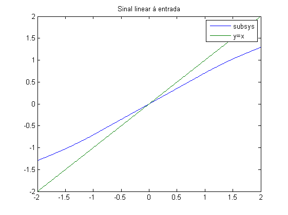
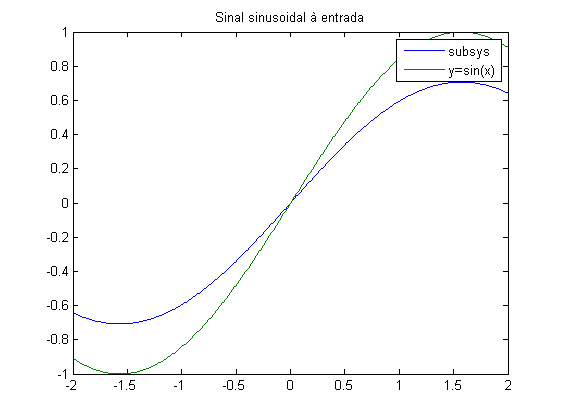
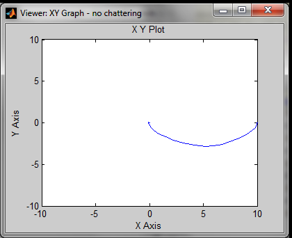
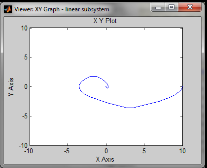
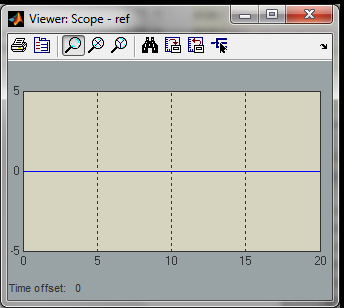
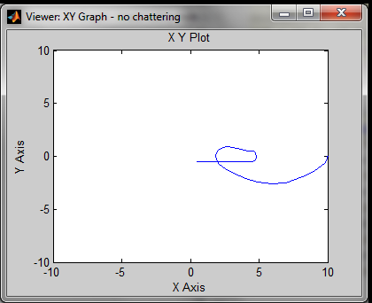
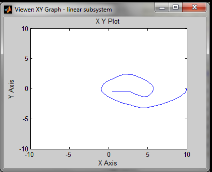
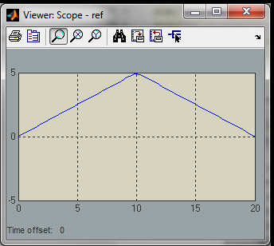

Contents
Análise da função f para entrada linear e sinusoidal
clear all close all yl = 0.4; k1 = 1/yl; k2 = sqrt(2*k1); % f(10) index = 1; Y=[]; Z=[]; X=[-2:.01:2]; for i=1:size(X,2) Y(i) = f(X(i)); Z(i) = f(sin(X(i))); end plot(X, Y, X, X) title('Sinal linear à entrada'); legend('subsys','y=x'); figure plot(X, Z, X, sin(X)) title('Sinal sinusoidal à entrada'); legend('subsys', 'y=sin(x)'); 
Ex7
é suposto utilizar k2 para o ganho ou um valor elevado? Falta comparar com o sistema básico em malha fechada, tanto a evoluçao do estado como do sinal de controlo (saida do subsistema) Quantificar tbm o tempo de resposta com sis basico e comparar
clear all close all pos0 = 10; % posição inicial da cabeça do disco ref = [0 0]; % valor da referência para a posição final da cabeça do disco yl = 0.4; k1 = 1/yl; k2 = sqrt(2*k1); xmin = -10; xmax = 10; ymin = -10; ymax = 10; % ambos os XY Graph viewers foram definidos entre xmin xmax e ymin ymax; A % posição inicial foi definida como pos0 = 10, o que nos % permite observar a diferença entre a utilização do subsistema % simplesmente linear e o subsistema com o troço não linear % para comparar a degradação da resposta no tempo, definiu-se o tempo de % simulação para 20 s. Compara-se o tempo que demora a atingir uma % velocidade final inferior a uma dada tolerância, neste caso 1E-3 vel_tolerance = 1E-3; sim('no_chattering'); response = responsetime(tout', vel', vel_tolerance) t_non_lin = response(2) % tempo de resposta com subsistema melhorado (não linear) sim('no_chattering_linearsubsys'); response = responsetime(tout', vel',vel_tolerance) t_lin = response(2) % tempo de resposta com subsistema linear % Um tempo de resposta maior corresponde a uma solução pior, dado que se % pretende minimizar o tempo de deslocamento da cabeaça do disco
response =
38.0000 9.8401 -0.0008
t_non_lin =
9.8401
response =
43.0000 11.5834 -0.1502
t_lin =
11.5834
   Ex8
clear all close all pos0 = 10; % posição inicial da cabeça do disco yl = 0.4; k1 = 1/yl; k2 = sqrt(2*k1); xmin = -10; xmax = 10; ymin = -10; ymax = 10; vel_tolerance = 1E-3; % ref = [0 0;10 0;10 5]; % sinal constante por troços ref = [0 0; 10 5; 20 0]; % sinal linear por troços sim('no_chattering'); sim('no_chattering_linearsubsys'); % Observando o espaço de fase para os dois sinais de entrada nota-se que a % resposta do sistema linear tende a afastar-se mais dos objetivos % antes de haver a troca do sinal da velocidade (correspondente a uma fase % de correçao da posição).  